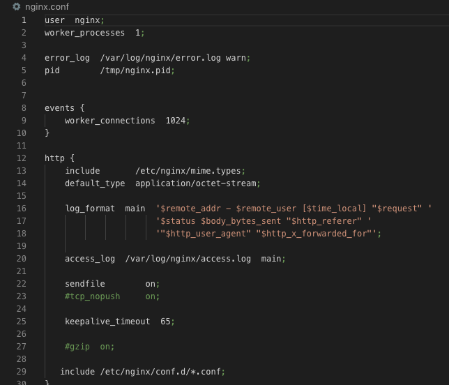

Приложение №1
Приложение №2

Приложение №3

Приложение №4
Приложение №5
Приложение №6

Приложение №7
Приложение №8
Приложение №9
Приложение №10
Приложение №11

Nginx [engine x] — это HTTP-сервер и обратный прокси-сервер, почтовый прокси-сервер, а также TCP/UDP прокси-сервер общего назначения, изначально написанный Игорем Сысоевым. Уже длительное время он обслуживает серверы многих высоконагруженных российских сайтов, таких как Яндекс, Mail.Ru, ВКонтакте и Рамблер. Согласно статистике Netcraft nginx обслуживал или проксировал 21.21% самых нагруженных сайтов в ноябре 2022 года. Nginx позиционируется производителем как простой, быстрый и надёжный сервер, не перегруженный функциями. Применение nginx целесообразно прежде всего для статических веб-сайтов и как обратного прокси-сервера перед динамическими сайтами. Nginx начал набирать популярность с момента релиза благодаря своей легковесности (light-weight resource utilization) и возможности легко масштабироваться на минимальном железе. Nginx превосходен при отдаче статического контента и спроектирован так, чтобы передавать динамические запросы другому ПО предназначенному для их обработки. Администраторы часто выбирают Nginx из-за его эффективного потребления ресурсов и отзывчивости под нагрузкой, а также из-за возможности использовать его и как веб-сервер, и как прокси.
В nginx рабочие процессы обслуживают одновременно множество соединений, мультиплексируя их вызовами операционной системы select, epoll (Linux) и kqueue (FreeBSD). Рабочие процессы выполняют цикл обработки событий от дескрипторов (см. Событийно-ориентированное программирование). Полученные от клиента данные разбираются с помощью конечного автомата. Разобранный запрос последовательно обрабатывается цепочкой модулей, задаваемой конфигурацией. Ответ клиенту формируется в буферах, которые хранят данные либо в памяти, либо указывают на отрезок файла. Буфера объединяются в цепочки, определяющие последовательность, в которой данные будут переданы клиенту. Если операционная система поддерживает эффективные операции ввода-вывода, такие, как writev и sendfile, то nginx применяет их по возможности. Наглядно архитектуру можно будет посмотреть в приложении №3.
Так как существует огромное множество версий дистрибутивов Linux, я выбрал дистрибутив Ubuntu 22.0 по нескольким причинам Во-первых он установлени у меня на компьютере. Во-вторых это один из самых поплуярных дистрибутивов на данный момент. В-третьих его легко использовать в личных целях обыденному пользователю, то есть у Ubuntu очень большой репозиторий программ, которые можно установить себе на компьютер и ни о чём не переживать.
Для установки требуется ввести команду в консоль:
> sudo apt isntall nginx
По выпонении данной команды будет скачена последняя стабильная версия с официальных репозитрий. Дальше только остаётся заняться конфигурацией скаченного nginx.
В главной директории находится нескольоко файлов с конифгурациями, каждый из которых ответчает за определенные функции сервера.
Скачиваем файл с сайта nginx.org[1].
Команду, написанную ниже необходимо запустить в командной строке wibdows прямо из католого, в котором лежит nginx.exe
> start nginx
В противном случае при дальнейшей работе будут ошибки (все пути в конфигурации прописаны как относительные,
только поменяв их все, можно запускать откуда угодно). Вообще рекомендуется держать консоль открытой в этом каталоге
до самого конца выполнения инструкций, однако для работы nginx это необязательно - если её закрыть, он продолжит
работать.
По указанному ниже пути можно будет найти файл nginx.conf, который требуется для дальнейшей конфигурации сервера.
/usr/local/nginx/conf/nginx.conf
Рассмотрим главный файл конфигурации nginx.conf. Cтруктура файла изображена в приложении №1.
Файл разделен на секции. Общая структура файла:
глобальные опции - отвечают за работу всей программы.
events - содержит настройки для работы с сетью.
http - содержит настройки веб-сервера.
server - в этой секции содержится настройка каждого размещенного на веб-сервере сайта.
location - может находиться только внутри секции server и соержит настройки только для определённого запроса.
mail - содержит настройки почтового прокси.
Синтаксис строки в конфигурационным файле:
параметр значение дополнительное значение ... ;
Расммотрим конкретные параметрые каждой секции:
Apache был разработан для доставки веб-контента, доступ к которому осуществляется через Интернет. Он известен тем, что играл ключевую роль в начальном росте интернета. Apache - это программное обеспечение с открытым исходным кодом, разработанное и поддерживаемое открытым сообществом разработчиков и работающее в самых разных операционных системах. Архитектура включает в себя ядро Apache и модули. Основной компонент предоставляет базовую серверную функцию, поэтому он принимает соединения и управляет параллелизмом. Различные модули соответствуют различным функциям, которые выполняются по каждому запросу. Конкретное развертывание Apache может быть сконфигурировано для включения различных модулей, таких как функции безопасности, управление динамическим контентом или для базовой обработки HTTP-запросов.
Модель «один сервер делает все» стала ключом к раннему успеху Apache. Однако по мере увеличения уровня трафика и увеличения количества веб-страниц и ограничения производительности настройка Apache на работу с реальным трафиком усложнялась.
Одно из самых существенных отличий между Apache и Nginx состоит в том как они обрабатывают соединения и отвечают на различные виды трафика. Apache предоставляет несколько модулей мультипроцессинга (multi-processing modules, MPM), которые отвечают за то как запрос клиента будет обработан. Это позволет администраторам определять политику обработки соединений. Apache предлагает гибкие возможности для выбора различных алгоритмов обработки соединений и запросов.
Nginx создает процессы-воркеры каждый из которых может обслуживать тысячи соединений. Воркеры достигают такого результата благодаря механизму основанному на быстром цикле, в котором проверяются и обрабатываются события. Отделение основной работы от обработки соединений позволяет каждому воркеру заниматься своей работой и отвлекаться на обработку соединений только тогда когда произошло новое событие. Каждое соединение, обрабатываемое воркером, помещается в event loop вместе с другими соединениями. В этом цикле события обрабатываются асинхронно, позволяя обрабатывать задачи в неблокирующей манере. Когда соединение закрывается оно удаляется из цикла. Этот подход к обработке соединений позволяет Nginx'у невероятно масштабироваться при ограниченных ресурсах. Поскольку сервер однопоточный и он не создает процессы под каждое соединение, использование памяти и CPU относительно равномерно, даже при высоких нагрузках.
То как веб-сервер интерпретирует запрос и сопоставляет его с ресурсом в системе это еще одна отличительная особенность в этих двух серверах.
Так как Apache изначально был спроектирован как веб-сервер, он по умолчанию интерпретирует запросы как ресурсы в файловой системе. Он берет document root веб-сервера и дополняет его частью запроса, которая следует за именем хоста и номером порта, чтобы найти запрашиваемый файл. В общем случае, иерархия файловой системы представленная в вебе доступна как дерево документов.
Nginx создан, чтобы работать и в качестве веб-сервера, и в качестве прокси-сервера.
По этой причине он работает в первую очередь с URI, транслируя их при необходимости в
запросы к файловой системе.
Эта особенность прослеживается в том как для Nginx конструируются и интерпретируются конфигурационные файлы.
В Nginx нет способа создать конфигурацию для заданной директории, вместо этого он парсит URI.
Например, основными конфигурационными блоками в Nginx являются
И Apache, и Nginx могут быть расширены при помощи системы модулей, но способы реализации модульной системы принципиально отличаются.
Модули Nginx реализуют те же возможности, что и модули Apache: проксирование, сжатие данных, ограничение частоты запросов, логгирование, модификация URL'ов, гео-локация, аутентификация, шифрование, потоковое вещание, почтовые функции.
В процессе использования приложения важными являются экосистема созданная вокруг него и возможность получения поддержки.
Так как Apache пользуется популярностью такое длительное время с поддержкой у него нет проблем. Легко можно найти большое количество документации как от разработчиков Apache, так и от сторонних авторов. Эта документация покрывает все возможные сценарии использования Apache, включая взаимодействие с другими приложениями.
Nginx обычно используется там, где предъявляются повышенные требования к производительности и в некоторых областях он все еще является догоняющим.В прошлом было сложно найти вменяемую поддержку по этому веб-серверу на английском языке, так как на ранних этапах разработка и документация велись на русском языке. Вместе с ростом интереса к проекту документация была переведена на английский и теперь можно найти достаточное количество документации и от разработчиков веб-сервера, и от сторонних авторов.
Основные различия между Apache и Nginx в том как они обрабатывают запросы к статическому и динамическому контенту.
Apache также может раздавать динамический контент встраивая интерпретатор нужного языка в каждого воркера. Это позволяет обрабатывать запросы к динамическому содержимому средствами самого веб-сервера и не полагаться на внешние компоненты. Интерпретаторы языков могут быть подключены к Apache с помощью динамически загружаемых модулей. Возможность обрабатывать динамический контент средствами самого Apache упрощает конфигурирование. Нет необходимости настраивать взаимодействие с дополнительным софтом, динамический модуль может быть легко отключен в случае изменившихся требований.
Nginx не имеет возможности самостоятельно обрабатывать запросы к динамическому контенту. Для обработки запросов к PHP или другому динамическому контенту Nginx должен передать запрос внешнему процессору для исполнения, подождать пока ответ будет сгенерирован и получить его. Затем результат может быть отправлен клиенту. Это может немного усложнить процесс настройки, в особенности когда вы будете пытаться предугадать какое число соединений разрешить, так как будет использоваться дополнительное соединение с процессором на каждый пользовательский запрос. Однако, этот метод имеет и свои преимущества. Так как интерпретатор не встроен в каждого воркера, то оверхед, связанный с этим, будет иметь место только при запросах к динамическому контенту. Статический контент будет возвращен клиенту простым способом и запросы к интерпретатору будут выполняться только тогда когда они нужны. Apache тоже может работать в такой манере, но тогда это лишит его всех преимуществ описанных в предыдущем разделе.
Для администраторов одним из очевидных отличий этих двух веб-серверов является наличие у Apache возможности задавать конфигурацию на уровне директории.
Apache имеет опцию, которая позволяет включить конфигурирование на уровне директорий. Если эта опция включена, то Apache будет искать конфигурационные директивы в директориях с контентом в специальных скрытых файлах, которые называются .htaccess. Так как такие конфигурационные файлы находятся в директриях с контентом, Apache вынужден при обработке каждого запроса проверять не содержит ли каждый компонент запрашиваемого пути файл .htaccess и исполнять директивы в найденных файлах. Это позволяет децентрализовать конфигурирование веб-сервера, что позволяет реализовать на уровне директорий модификацию URL'ов (URL rewrite), ограничения доступа, авторизацию и аутентификацию и даже политики кеширования. Несмотря на то, что все описанное выше может быть настроено и в основном конфигурационном файле Apache, файлы .htaccess имеют ряд преимуществ. Во-первых, эти файлы интерпретируются как только они найдены по запрашиваемому пути, что позволяет менять конфигурацию на лету не перезагружая веб-сервер. Во вторых, это позволяет дать возможность непривилегированным пользователям контролировать определынные аспекты собственных веб-приложений с помощью .htaccess. Это дает простой способ таким приложениям как системы управления контентом (CMS) конфигурировать собственное окружение не имея доступа к конфигурационному файлу веб-сервера. Это также может быть использовано шаред хостингами, чтобы сохранить контроль над основным конфигурационным файлом и дать клиентам контроль над конфигурацией определенных директорий.
Nginx не интерпретирует файлы .htaccess и не предоставляет механизм конфигурирования на уровне директорий за пределами основного конфигурационного файла. Этот подход может показаться менее гибким чем в случае с Apache.
В таблице №1 приведено наглядное сравнение особенностей двух сравниваемых серверов: Apache и Nginx
| Особенность | Nginx | Apache |
|---|---|---|
| Простота | Сложный в разработке, поскольку он имеет сложную архитектуру для одновременной обработки нескольких соединений. | Легко разрабатывать и внедрять инновации благодаря своей модели «одно соединение на процесс» |
| Производительность - Статический контент | В 2,5 раза быстрее чем Apache и потребляет меньше памяти | Медленно в отображении статического контента |
| Производительность - Динамический контент | Отличная производительность для динамического контента | Отличная производительность для динамического контента |
| Поддержка операционной системы | Поддерживает все ОС - как Unix, так и Windows, однако производительность в Windows сравнительно менее стабильна. | Поддерживает все ОС - Unix, как и Windows |
| Безопасность | Это безопасный веб-сервер. Понимание и настройка функций безопасности важны | Это безопасный веб-сервер. Понимание и настройка функций безопасности важны |
| Гибкость | Nginx версии 1.11.5 и Nginx Plus Release R11 представили совместимость для динамических модулей | Можно настроить, добавив модули. Apache имел динамическую загрузку модулей дольше всего. |
| Поддержка и документация | Несмотря на слабое начало поддержки и документации для Nginx, он быстро рос, поэтому теперь у него есть отличная поддержка ресурсов и доступная документация. | Отличная поддержка и документация доступны, как это было на рынке в течение очень долгого времени. |
Как видно, Apache и Nginx являются мощными, гибкими и способными. Последние версии обоих серверов являются конкурентоспособными во всех областях. Решение о том, какой сервер лучше для вас, во многом зависит от оценки ваших конкретных требований и выбора наилучшего варианта.
Распространенной схемой использования является размещение Nginx перед Apache в качестве реверс-прокси. В такой конфигурации Nginx называют фронтендом, а Apache — бэкендом. При таком подходе Nginx будет обслуживать все входящие запросы клиентов и мы получим выигрыш из-за его возможности обрабатывать множество конкурентных запросов.
В предыдущих главах я подробно описал как можно установить nginx на желаемую вами операционную систему. Также описал файл конфигурации сервера и предоставил пример конкретной конфигурации под php сервер. В данной главе я хотел бы уделить внимание php и mysql, так как они потребуются в большинстве случаев для работы на данном сервере. Дальнейшие инструкции будут рассмотрены для операционном системы Windows.
Скачиваем с официального сайта php.net[2] (ZIP-архив Non Thread Safe x64), замечаем номер в "VC(число)" - понадобится на следующем шаге. Прописываем каталог в PATH.
Открываем командную строку, запускаем
> php -v
Должно выскочить окно с надписью "The program can't start because VCRUNTIME140.dll". Если запуск прошел без ошибок, пропускаем следующий пункт.
Ищем на странице загрузки из п.1 в левой колонке ссылку на VC нужного номера. Скачиваем x64.exe, устанавливаем. После этого возвращаемся на предыдущий пункт. На этот раз команда должна показать версию php.
В раздел server конфигурации добавляем такие строки:
location ~\.php$ {
(9123 - номер порта, можно выбрать какой-нибудь другой)
fastcgi_pass 127.0.0.1:9123;
fastcgi_param SCRIPT_FILENAME $document_root$fastcgi_script_name;
include fastcgi_params;
}
Из консоли даем команду:
> nginx -s reload
В консоли переходим в каталог, куда распакован PHP. Даем команду:
> php-cgi.exe -b 127.0.0.1:9123
Закрывать окно консоли нельзя, иначе интерпретатор PHP перестанет работать.
Можно прописать путь к каталогу PHP в системной переменной PATH и запускать
его без указания полного пути.
Создаем файл D:\sites\mysite\test.php со следующим содержимым:
?php echo "This is PHP script on mysite";
Открываем http://mysite/test.php - текст должен отображаться.
Чтобы перейти к установке MySQL 8, сначала необходимо скачать дистрибутив этой программы. Скачать MySQL 8 в редакции Community можно, как было уже отмечено, абсолютно свободно с официального сайта, вот ссылка на страницу загрузки[3]. Ндо скачать полный установщик – дистрибутив программы MySQL, который включает все необходимые компоненты.
Далее запускаем скаченный файл, в итоге запустится программа установки MySQL. Сначала выбираем тип установки. Нам предлагают несколько вариантов:
Затем программа установки проверит систему на наличие компонентов, которые требуются для работы некоторых расширений MySQL. В моем случае программа установки выдала два предупреждения для расширений MySQL For Excel и MySQL For Visual Studio. Если Вы планируете пользоваться этими компонентами, то Вам нужно устранить эти замечания. Для этого в свою очередь Вам необходимо установить эти компоненты (т.е. выделить их и нажать «Execute», некоторые могут установиться и автоматически). Посмотреть можно в приложении №4
Дальше переходим к настройке самого сервера. Сначала нам обязательно необходимо настроить MySQL Server.
Первым делом настраиваем параметр «High Availability» (Высокая доступность), который отвечает за то, как будет установлен MySQL сервер. В нашем случае,
как и в большинстве других, требуется стандартный «Standalone MySQL Server» (Автономный сервер) – это классический вариант установки MySQL Server.
Далее настраиваем тип сервера и сеть. В нашем случае можно оставить все по умолчанию:
После этого нам нужно придумать пароль для пользователя root (это главный администратор MySQL).
Кроме этого, мы можем добавить дополнительных пользователей, чтобы это сделать, необходимо нажать на кнопку «Add User».
И ввести необходимые данные:
Следующий этап - это настроить службу MySQL, которая будет работать в Windows. Можем задать
Чтобы установить связь между PHP и MySQL, не требуется никаких специальных действий, кроме собственно создания соединения (разумеется, должен быть включен соответствующий модуль, например, mysqli).
Проверить соединение можно так:
echo "Connecting to MySQL server... ";
// $host = 'localhost'; // если соединяемся через named pipe (аналог Unix-сокета),
$host = "."; // то в качестве хоста указываем "."
$user = "someone";
$password = "a password";
$mysqli = new mysqli($host, $user, $password);
if ($mysqli->connect_error)
echo $mysqli->connect_error;
else
echo "Connected successfully!";
В заключении хотелось бы сказать, что я дал поверхностное представление об самом веб-сервере Nginx и его возможной установки, конфигурации для нужд пользователя на операционной системе Linux и Windows. Также были приведено сравнение с таким популярным веб-сервером как Apache, где каждый критерий оценивание сервера расмматривался отдельно и в конце была подведена итоговая таблица с кратким сравнением характеристик каждого. В последней главе было описано как можно взаимодействовать с MySQL и PHP используя установленный ранее нами Nginx.
Про Nginx в целом можно сказать, что под этими простыми описаниями скрывается более чем десятилетний опыт разработки и оптимизации, который позволяет NGINX демонстрировать выдающуюся производительность на широком спектре оборудования и реальных задачах, оставаясь надежным и безопасным, как того требуют современные веб-приложения.